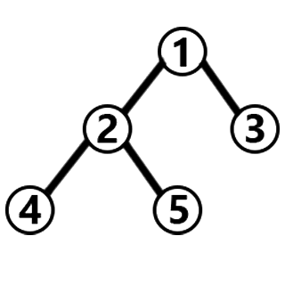
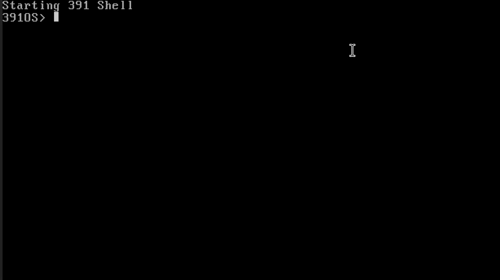
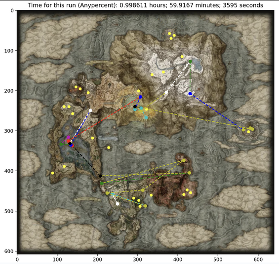
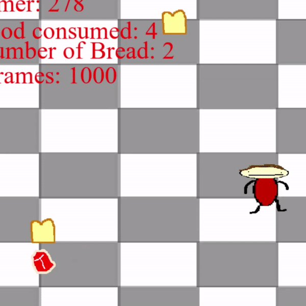
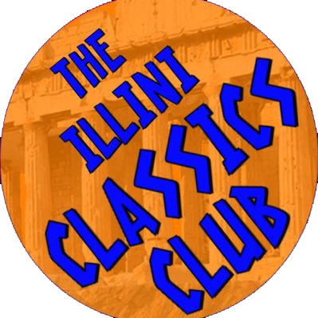

For the past three summers now, I've been an intern for the software engineering department at AvTech Corp., creating and improving programs relating to the aviation industry. I do all sorts of full-stack development, from backend C# programs to web consoles and Android user-interfaces.
My most interesting projects have been an interactive map web console in Typescript that displays real-time locations of buses, a backend service in C# to parse bus location information from a database and calculate estimated arrival times, a Python application that efficiently and securely communicates with proximity beacons via LoRaWAN technology, and a VBA (Excel) schedule generator to help airport staff to assign van drivers to service flights throughout the workday given a set of constraints. I often also actively communicate with clients and write up detailed project reports to guide users through setup and execution of the programs.
Hello there!
(If you can say a fitting follow-up line (whether it be from Star Wars or the blink-182 song), we could definitely be friends.)
My name is Malcolm and I'm a student of Computer Science and Anthropology at the University of Illinois at Urbana-Champaign (UIUC). My interests primarily lie in computer systems, networks, and architectures. I'm also very interested in paleoanthropology, or the study of human evolution from the early apes to modern humans (no, there isn't much overlap, I know).
I actively work with C, C++, C#, Python, Go, Javascript/Typescript, HTML, and CSS, and in the past I've worked with Java, x86 and MIPS Assembly, VBA, Verilog, SQL, R, and GML. Outside of computer science, I also work a lot with multimedia editing tools such as Photoshop and Sony Vegas, which I use to create video essay projects for school and YouTube (fun fact: these YouTube videos have a total of over 1,000,000 views!).
Work Experience
 From January to May 2024, I was a course assistant for UIUC's computer architecture class. My primary job was to hold office hours to guide students through the creation and debugging of lab assignments focused on CPU design and optimization. We build some really cool stuff in these labs: we start off by creating simple computer components like register files and ALUs and move on to create fully-functional 32-bit CPUs, all in Verilog. Then we optimize these CPUs by adding in pipelining and interrupt handling. We then transition into MIPS Assembly coding assignments, which focus on teaching students how machine-level programming works, culminating in a project called Lab Spimbot that requires students to optimize the movement of a virtual robot using interrupt handling in Assembly. Additionally, some assignments have students create and optimize simulations of caches as well as implement parallelism, all in C and C++. I also taught students the conceptual bases behind these topics and more.
From January to May 2024, I was a course assistant for UIUC's computer architecture class. My primary job was to hold office hours to guide students through the creation and debugging of lab assignments focused on CPU design and optimization. We build some really cool stuff in these labs: we start off by creating simple computer components like register files and ALUs and move on to create fully-functional 32-bit CPUs, all in Verilog. Then we optimize these CPUs by adding in pipelining and interrupt handling. We then transition into MIPS Assembly coding assignments, which focus on teaching students how machine-level programming works, culminating in a project called Lab Spimbot that requires students to optimize the movement of a virtual robot using interrupt handling in Assembly. Additionally, some assignments have students create and optimize simulations of caches as well as implement parallelism, all in C and C++. I also taught students the conceptual bases behind these topics and more.
 In Spring of 2023, I was a course assistant for the introductory discrete mathematics class for computer science majors at UIUC. I held scheduled office hours, attended discussion sections, and answered student questions on Discord and course forums to help teach students about fundamental computer science topics. Such topics included algorithm analysis, boolean algebra, recursion, sets, graphs, and trees.
Projects
Linux-Like Operating System
 In Spring of 2024, I led a team of 4 engineers over 8 weeks to construct a simplified Linux-like operating system (or kernel) from scratch in C and x86 Assembly. The final product (with over 13,000 lines of code) was a system that functions almost like a real kernel would. To implement it, we started with the basics: getting the system to boot by initializing the appropriate kernel-level data structures and initializing the hardware devices that handle interrupts. We then developed comprehensive device drivers for the keyboard, terminal, real-time clock, and timer. We implemented features to ensure security and speed, including virtual memory and file system abstractions. And the pièce de résistance of the project was support for running multiple processes simultaneously, including scheduling, system calls, and interrupt handling.
 In Spring of 2023, I and a few friends created a C++ program that reads in data from the Elden Ring map and calculates an optimal speedrunning route using various modifications of graph traversal algorithms like Dijkstra's and Floyd-Warshall. The algorithms find shortest paths between nodes while simultaneously accounting for all the intricacies of the video game and enforcing certain pathways (you can't fight Radahn without visiting Altus first!). In the end, the calculated times for our routes were within 5% of actual speedrun world records! Finally, using the path we calculated, we used Python and Matplotlib to visualize the route via a path drawn over the actual Elden Ring map. I've tried the route myself in-game and it works pretty well!
 Tud's Rotund Journey is a goofy game I developed in Summer 2022. I'm no artist, but I drew all of the sprites and backgrounds, recorded the sounds, and programmed the entire thing in the Python library PyGame.
Machine Learning Model for Estimating CPU Performance
In November of 2023, I created a machine learning model that estimates the performance of a CPU given statistics such as the size of the cache and the number of memory channels using Python, Pandas, and Scikit-Learn.
Discord Chat Bot
In Summer of 2022, I developed a Discord chat bot that can hold a (somewhat sensible) conversation by parsing and reacting to words a user sends, and can access and send files. This was all possible with Discord's API tools and the Python programming language.
Activities
During my time at UIUC, I've been involved in the largest computer science student organization on campus, primarily in the special interest groups SIGARCH (the special interest group for computer architecture), SIGCHI (the special interest group for computer-human interaction), and Game Builders. In these clubs, we work on various software and hardware projects as well as read academic papers and discuss the respective fields in detail.
 Since Fall of 2023, I have been serving as the treasurer of the Illini Classics Club, which is the organization for students on campus interested in classical texts, cultures, philosophies, and all that fun stuff.
More
If I'm not doing any of the above activites, I'm probably playing some instrument (drums, guitar, or piano) or some challenging video game (Elden Ring, Dark Souls, Sekiro, Hollow Knight, Hades, Dead Cells, and others). I can also roll a quarter across my knuckles like Val Kilmer, I know the locations of all 193 U.N. countries on the world map, and if you send me a picture of any random primate, I can probably tell you what species it is.
Website created in July of 2023 from scratch using HTML, CSS, and JavaScript/Typescript. Hosted using GitHub Pages. Last updated in November of 2024. Based on an earlier version of the site I created using the React framework in November of 2022. All pieces of media on this site are either created by me or in the public domain. Royalty free images from Pexels or Pixabay.